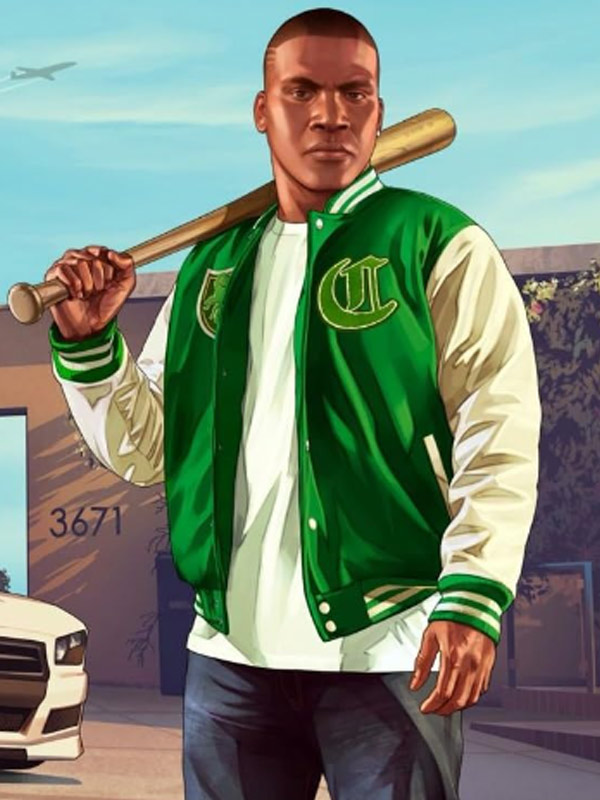
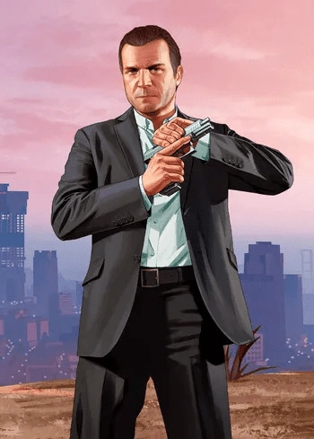
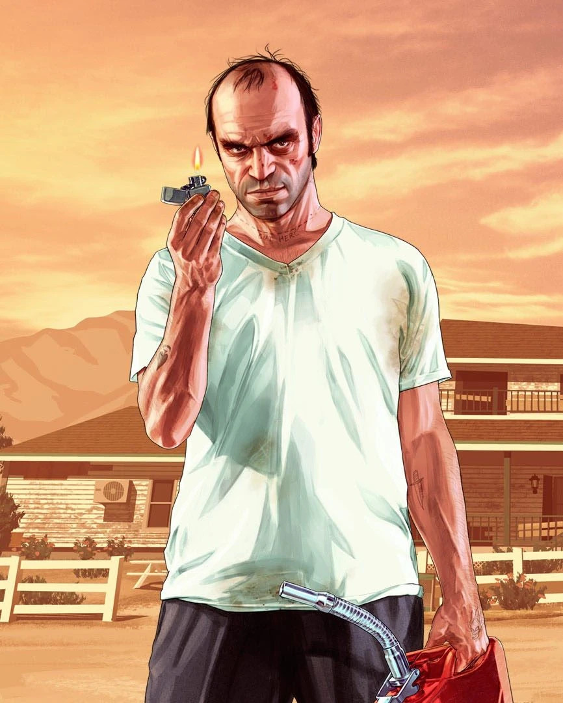

Franklin est un jeune homme ambitieux de South Los Santos, lassé de la petite criminalité. Il commence comme récupérateur de voitures pour un concessionnaire louche, mais sa vie change lorsqu’il rencontre Michael. Grâce à lui, Franklin entre dans un monde criminel plus sophistiqué, avec l’espoir de gravir les échelons et s’en sortir. Calme et réfléchi, il cherche à réussir intelligemment. Dans GTA Online: The Contract, on le retrouve plus tard à la tête d’une agence florissante, preuve de son ascension.

Michael, ancien braqueur légendaire, vit sous une nouvelle identité dans une villa luxueuse avec une famille dysfonctionnelle. Bien qu’il ait tout pour être heureux, il s’ennuie et regrette sa vie d’avant. Sa rencontre avec Franklin le pousse à replonger dans le crime. Riche, malin mais tourmenté, Michael rêve aussi de devenir réalisateur. Il tente de se racheter, mais reste tiraillé entre passé et présent, entre envie de rédemption et pulsions criminelles.

Trevor est un ancien pilote militaire et criminel instable, vivant dans le désert. Brutal, imprévisible et souvent violent, il représente le chaos pur. Il dirige une entreprise criminelle et méprise les règles, mais reste intelligent et parfois loyal. Son retour dans la vie de Michael relance de vieilles tensions. Malgré ses excès, Trevor est complexe : il ne cache rien, vit selon ses propres règles, et incarne les côtés les plus sombres (et fascinants) de l’univers de GTA.
